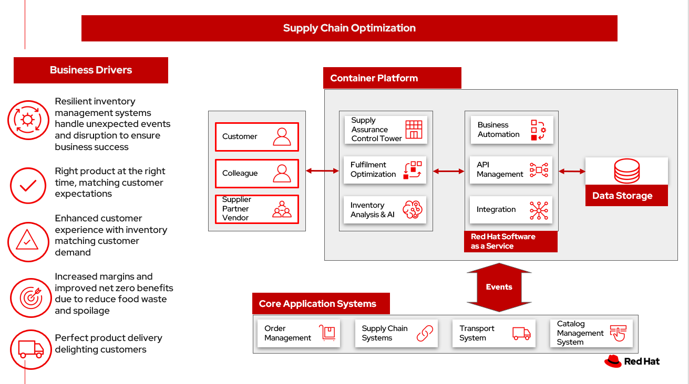

Supply Chain Optimization Overview
Retailers, manufacturers and organizations are exploring ways to better able to understand and act on changes in the market as they occur to balance protecting margins, utilizing store and warehouse capacity and meeting delivery expectations. These sourcing decisions can dramatically increase profits, especially during peak periods.
In addition, organizations are exploring how to provide a more sustainable footprint. Organizations are looking to redefine an enterprise-wide approach to sustainability.
In this overview, we will discuss the business challenges, business value, and business outcomes and then provide automation and modernization actionable steps organizations can take to drive innovation and move toward a digital supply chain. These are based on The Action Guide in Own your transformation survey of 1500 CSCOs across 24 industries. Actionable steps will be developed through the lens of use cases on how the main risk factors can be transformed:
To further describe the business problems and possible solutions a number of scenarios will be introduced. - Perfect order - Intellient Order - Demand risk - Loss and waste management - Product timeliness - Sustainable supply chain
We will then give an overview of the solution, reference architecture, logical diagram, and how these capabilities are realized by technology capabilities.
Supply chain concepts
Fulfilment is the process of exceeding customer expectations when the customer receives their requested products, good or services. The items must be made available in a suitable timeframe, at the correct location and in an acceptable condition.
Fulfilment optimization takes the fulfillment process a step further by using information and knowledge about the supply chain, inventory and stock positions to ensure any promises made to the customer are met or exceeded.
A key element of the retail fulfilment process is knowing the inventory position. This is the amount of stock available for sale to a customer, its location and the time it takes to make it available to the customer.
Inventory optimization is a collection of best practices for ensuring the retail organisation maintains complete and accurate stock levels whilst balancing customer demand against current and future stock levels.
Sustainability in business refers to a company's strategy to reduce negative environmental impact resulting from their operations in a particular market. An organizations sustainability practices are typically analyzed against environmental, social, and governance (ESG) metrics.
The business goal is to balance the long-term imperative to protect the planet with the immediate need to preserve the bottom line.
Business problem
Chief Supply Chain Officers (CSCOs) face issues related to supply chain disruptions, technology infrastructure, sustainability, and market shifts as their greatest challenges. Yet when addressed with an open mindset, challenges create opportunities within the enterpriseand visibility.
Harvard Business Review article, Three steps to prepare your supply chain for the next crisis. reports:
Companies that are well prepared and as a result prosper in a crisis can expect to recover more quickly than their competitors. In a review of corporate performance during the past four U.S. downturns (since 1985), Boston Consulting Group (BCG) found that 14% of companies increasedtheir sales and their profit margin.
Investors are starting to reward companies that build for the future by becoming more innovative and more resilient. In June 2020, during the depths of the Covid-19 pandemic, BCG surveyed major institutional investors and found that nine out of ten believed it was "important for healthy companies to prioritize the building of business capabilities even if it means lowering earnings-per-share guidance or delivering below consensus."
The McKinsey report How COVID-19 is reshaping supply chains explains that companies found it was easier to increase inventories than implement their preferred strategy of nearshoring or regionalization. In addition, "The proactive monitoring of supplier risks was the primary focus , yet significant blind spots remain in most companies supply-chain risk-management setups. Just under half of the companies in our survey say they understand the location of their tier-one suppliers and the key risks those suppliers face."
Enhanced customer experiences, improved profitability, and more predictive forecasts are high on CSCOs' priority lists according to a report by IBM Institute for Business Value, Own your transformation: Data-led innovation for the modern supply chain.
Business value
Inventory optimization is making sure the current and future demand is accurately balanced against current and future inventory across the enterprise. Getting the balance correct leads to a successful and profitable retail business. Getting the balance wrong leads to failure and in the worst case, eventual collapse of the business.
Specifically, Harvard Business Review article recommends:
CEOs need to invest in risk intelligence and strategic foresight, creating a team of procurement super-forecasters equipped with the latest artificial-intelligence (AI)-powered sensing technology.
Challenges / Business Drivers
Challenges
- Addressing supply chain disruptions, technology infrastructure, sustainability and market shifts.
- Using an open mindset to address challenges thereby create opportunities.
Drivers
- Resilient inventory management systems handle unexpected events and disruption to ensure business success
- Right product at the right time, matching customer expectations
- Enhanced customer experience with inventory matching customer demand
- Increased margins and improved net zero benefits due to reduce food waste and spoilage
- Perfect product delivery delighting customers
Business outcomes
- Business responds to unexpected changes in supply chain
- Increased customer satisfaction by meeting customer expectation for goods and delivery
- Profit, revenue increases due to reduce waste and spoilage
- Meets sustainability commitments reflected in brand awareness
Impacts on KPIs
According to the IBM IBV study, innovators track well ahead of their peers when it comes to AI-enabled workflows for risk management and to handle other predictions. And they expect continued development of these workflows and other capabilities over the next three years. Right now, Innovator CSCOs report developing digitized workflows and leveraging AI automation a full 95% more than their peers.
Innovators also stand out by leveraging data with AI and advanced analytics in demand management. With demand volatility and associated supplier, operations, and logistics disruption at all-time highs, CSCOs are applying AI and machine learning to the critical and strategic continuous planning elements of demand management and forecasting. A full 90% of Innovators use AI and advanced analytics in demand management and predictive forecasting, 18% more than their peers (76%).
Directly influence the following KPIs:
- Improve lost sales from stock out 4-8%
- Solution cost savings 10%
- Increase stock turnover
- Reduce days on hand
- Manage lead time (may be leading indicator of stock overage)
- Reduce holding cost
- Manage product at risk/perishability/age
- Improve gross margin return on investment
- Reduce return rate
- Black swan events. Manage unusual events regarding weather, natural disaster, supply chain interruption.
- Improve customer satisfaction
Solution overview
This solution combines existing systems with state-of-the-art offerings to:
- Create a world-class sensing and risk-monitoring operation.
- Accelerate automation in extended workflows
- Amp up AI to make workflows smarter
- Modernize for modern infrastructures, scale hybrid cloud platforms
The following diagram provides a high-level overview how systems work together for the desired outcomes.

Scenarios
To demonstrate the importance of inventory optimization for any business, several articles outline main use cases on how the main risk factors can be transformed:
- Perfect order
- Intellient Order
- Demand risk
- Loss and waste management
- Product timeliness
- Returns
- Disaster readiness
The following section explore more details on each of the scenarios.
Perfect order
Inventory may not be on hand or in a different location than expected. Multiple and partial shipments may be able to solve many customer requests.
The business can respond to the imperfect order and increase customer responsiveness with:
- Intelligent promising
- Optmization user expectations with improved demand forecasting
- Automated responses
For more information and solution details on this scenario, see Perfect order
Intelligent order
If the last mile delivery promise is incorrect and a product arrives late, theres a good chance that the customer will shop with a competitor next time.
If last mile tracking information is incorrect, a product arrives late, is damaged, or is never delivered, theres a good chance that the customer will shop with a competitor next time.
For more information about the solution details on this scenario, see Intelligent order.
Demand risk
Understock - not holding sufficient inventory to meet current demand. This includes not having enough inventory today but also, not having enough inventory in the very near future that could be used to meet the demand.
Overstock - holding more stock than required to meet current and future demand. This results in additional costs to store then dispose of overstocked items via discounts, selling at a loss or destruction.
For more information about the solution details on this scenario, see Demand risk.
Loss and waste management
Loss and waste management requires you to take decisive action in cases of:
- Shelf life. Identify and timely replace items as shelf life expires. NOTE: This is covered in Product timeliness
- Environmental exceptions. Food expirations, power interruption or other disaster affecting the product salability.
- Contamination or recall. Quickly identify, remove contaminated and recalled items from sale or items that have a contaminated component. Proactively provide safe alternative or replacement when safe.
For more information about the solution details on this scenario, see Loss and waste management.
Product timeliness
Product timeliness is having goods and products in the right place at the right time, packed correctly and in line with customer expectations. This risk is particular to seasonal goods, fast fashion, drugs, cosmetics, grocery and food supply industry. KPIs relevant to product timeliness include dead stock and inventory days on hand.
- Shelf life defines a set of actions to be taken with products that expire on specific dates and must be removed from use or sale. For example, food can expire and need to be removed from shelves.
- Timeliness defines a set of actions that can be taken when products expire, but that may be still have some benefit. For example, seasonality of clothing can be warehoused until the following year.
For more information about the solution details on this scenario, see Product timeliness.
Sustainable supply chain
Sustainability provides an opportunity to differentiate your business, yet the business must balance the long-term imperative to protect the planet with the immediate need to preserve the bottom line. On a rapidly warming planet, companies across sectors have transformed business models to forge a sustainable future ‐ one that protects people, planet, and profits. In the race to reduce emissions, consumption, and waste, everything is on the table. Supply chains are being recalibrated. Source materials are evolving. Travel requests are carefully scrutinized.
Portfolio architecture
The following diagram provides an overall portfolio architecture for the solution.
The portfolio architecture shows the major systems and how they relate to each other. The following sections describe the system features in more details.
Logical diagram
The following logical diagram describes a set of personas and technologies that provide a platform for some of the biggest potential for ideation and breakthroughs with supply chain.

The logical diagram is explained as solution tiers and personas in the following sections.
Solution tiers
The technologies can be grouped into main categories:
- User applications. Applications where supply chain activities are reported and used by customers, colleagues, suppliers, and logistics. In particular, the inventory controller interacts with the Inventory Optimization Platform, described in a following section.
-
Core application systems. Often customer-provided technologies, such as order management, facilities management. These include services, data, and systems currently used within the organization, such as:
- Point of Sale systems
- Store Operations Systems
- External Data Feeds
- Planning and Replentishment system
- Warehouse management
- Order management
- Supply chain system
- Transport system
- Catalog Management system
- Facility Asset Management system
-
Inegration Services. Manages the events and data between systems, and includes:
- Integration services
- Data fabric
- Business automation
- DevOps
- API Management
-
Supply Assurance platform including systems supporting:
- Supply assurance control tower
- Fulfillment optimization
- Inventory analysis and AI
- Supply intelligence
- Supply risk management
- Demand intelligence
- Sustainability
-
Omni Channels
- Web applications for users
- Point of sale applications in stores
- Mobility and device applications
- Social media
- Parter applications
Personas
The following stakeholders within the organization.
- Executive sponsors. Global Supply Chain VP/Officer, VP Global Supply Chain Operations, IT Innovation, eComm Inventory Controller, Merchandize Logistics Manager, Store Operations VP/Lead
- Influencers. Inventory Control Specialists, Inventory management director, Supply chain professional, store inventory manager, fulfillment manager, inventory analyst, financial control officer/controller, Demand forecaster analyst, Inventory planning
- Operations. Warehouse managers, logistics managers
The following represent users of the system outside of the organization.
- Customers
- Business partners
- Vendors
The technology capabilities
This section provides the logical components of the solution. The solution architecture provides for:
- Independent deployable, scaled business services
- Composable, stateless modular services
- API first approach to building any service
- Inter communication between services asynchronous
- Business functions, API access controls managed independently
- Can be deployed across multiple data centers for HA capable of tenant level failover
Foundational technologies ‐ Hybrid Cloud Platform
The decision for a future, Kubernetes-based enterprise platform is defining the standards for development, deployment and operations tools and processes for years to come and thus represents a foundational decision point. Key client value areas include:
- Platform for Digital Transformation and Modernization
- Accelerated application development for faster go-to-market and innovation
- Engineering excellence through an enterprise grade open source container platform
- Self-service transformation with DevOps/SRE and automated operations
Specifically, the recommended platform includes:
- Red Hat Enterprise Linux is the worlds leading enterprise Linux platform. Its an open-source operating system (OS). Its the foundation from which you can scale existing appsand roll out emerging technologiesacross bare-metal, virtual, container, and all types of cloud environments.
-
Red Hat OpenShift Kubernetes offering, the hybrid platform offering allow deployment across data centers, private and public clouds offering choices and flexible for hosting system and services. You can manage clusters and applications from a single console, with built-in security policies with
-
Business Automation Workflow unites information, processes and users to help you automate digital workflows on premises or on cloud. Create workflows that increase productivity, improve collaboration between teams, and gain new insight to resolve cases and drive better business outcomes.
- Red Hat Ansible Automation Platform operate, scale and delegate automate IT services, track changes an update inventory, prevent configuration drift and integrated with ITSM.
- Red Hat OpenShift API Management is a managed API traffic control and program management service to secure, manage, and monitor APIs at every stage of the development lifecycle.
- Red Hat Intgration is a comprehensive set of integration and messaging technologies to connect applications and data across hybrid infrastructures. It is an agile, distributed, containerized, and API-centric solution. It provides service composition and orchestration, application connectivity and data transformation, real-time message streaming, change data capture, and API management.
- Red Hat OpenShift DevOps reoresents an approach to culture, automation and platform design intended to deliver increased business value and responsiveness through rapid, high-quality service delivery. DevOps means linking legacy apps with newer cloud-native apps and infrastructure. A DevOps developer can link legacy apps with newer cloud-native apps and infrastructure.
-
IBM Data Fabric empowers your teams and works across the ecosystem by connecyting data from disparate data sources in multicloud envrionments. In particular:
- Watson Knowledge Catalog provides you users with a catalog tool for intelligent, self-service discovery of data, models.
- Watson Query provides data consumers with a universal query engine that executes distributed and virtualized queries across databases, data warehouses, data lakes, and streaming data without additional manual changes, data movement or replication.
Core application systems
The core application systems can be in-house applications, cloud services, IBM or competitive applications. The core applications provide data through the foundational technologies (such as API management that provides monitoring and security). They can also respond to automated actions based on business rules or from other layers in the system.
Supply Assurance Platform
Each of the core application systems provides data and responds to events through the foundational technologies.
Supply assurance control tower. Gartner describes supply chain technology as a central hub as an integrated part of a broader SCM platform using these building blocks: people, process, data, organization and technology. The idea is to capture and use data to provide enhanced real-time visibility and in-depth analysis. IBM Supply Chain Control Tower, powered by industry-leading AI, provides actionable visibility to orchestrate your end-to-end supply chain network, identify and understand the impact of external events to predict disruptions, and take actions based on recommendations to mitigate the upstream and downstream effects.
Fulfillment optimization. Gartner describes the fulfillment forecasting approach, which provides a more accurate view of consumer fulfillment choices. This approach enables retailers to accurately gauge the right amount of inventory required to meet demand in stores, distribution centers and other inventory holding notes throughout the retailers network. IBM offers IBM Sterling Intelligent Promising provides shoppers with greater certainty, choice and transparency across their buying journey.
Inventory analysis and AI. This cognitive analytic engine enhances existing order management systems. It determines the best location from which to fulfill an order, based on business rules, cost factors, and current inventory levels and placement. IBM includes IBM Sterling Fulfillment Optimizer with Watson as a component of IBM Sterling Intelligent Promising.
Supply risk management. Gartner describes the key tenets of supply chain risk management enhance resilience and improve competitiveness.
- Market disruptions include: natural disasters, pandemics, political uncertainty, economic upheaval, cyber and terrorist attacks, third-party or supplier threats, and rapid swings in consumer preferences and demand.
- Supply chain transformation also complicates supply chain risk management ‐ lean, but complex and globally dispersed operations add risks, and the supply chain risk management process is vital in wringing out efficiencies and costs.
Inventory visibility. This processes inventory supply and demand activity to provide accurate and real-time global visibility across selling channels. For this solution, IBM offers Sterling Inventory Visibility, which is included with IBM Sterling Intelligent Promising.
Planning and analytics. Businesses need to evolve their planning and analysis strategies to include continuous, integrated planning. This means creating a single source of truth to streamline planning, manage performance and build alignment across the enterprise. In this category IBM offers:
- IBM Planning Analytics with Watson to streamline and integrate financial and operational planning across the enterprise.
- IBM Maximo MRO Inventory Optimization to help you optimize your maintenance, repair and operations (MRO) inventory by providing an accurate, detailed picture of performance.
Sustainability. To put your sustainability goals into action, you need a strategy and solutions that are specific to your needs. Businesses can approach sustainability initiatives by:
- Strategic partnership with Red Hat and IBM.
- Using environmental, social and governance (ESG) reporting to integrate data silos. Find new opportunities to drive positive change across your operations with Envizi.
- To manage assets, you can create a lower-emissions business. Use automation to track resource usage, reduce costs and improve services with IBM Maximo Application Suite.
Action guide
From a high-level perspective, several main steps are suggested for your organization to drive innovation and move toward a digital supply chain.
Automation
- Accelerate automation in extended workflows
- Amp up AI to make workflows smarter
- Cultivate collaborative ecosystems
Sustainability
- Link environmental and social initiatives with business solutions
- Optimize workflows with AI to manage carbon, waste, energy, and water consumption
- Compete with new sustainable products and services
Modernization
- Architect modern infrastructures
- Scale hybrid cloud platforms
- Increase awareness of cybersecurity vulnerabilities and solutions
For specific steps on this approach, see The Action Guide details in Own your transformation survey of 1500 CSCOs across 24 industries.
Next steps
See Action Guide section in each of the use cases:
- Perfect order
- Intelligent order
- Demand risk
- Loss and waste management
- Product timeliness
- Returns
- Disaster readiness
References
- McKinsey: How COVID-19 is reshaping supply chains
- Harvard Business Review: Three steps to prepare your supply chain for the next crisis
- Gartner: What is a Supply Chain Control Tower and what's needed to deploy one
- Gartner: Fulfillment Forecasting: The Key to Optimizing Retail Inventory Positioning
- Gartner: Supply Chain Risk Management (SCRM): What & Why Is It Important
- IBM Institute for Business Value: Own your transfomation
- IBM Institute for Business Value: Balancing sustainability and profitability
- What is sustainability in business?
Downloads
View and download all of the Inventory Optimization diagrams shown in previous sections in our open source tooling site.
- PowerPoint Solution Overview: Open Solution Overview
- PowerPoint Reference Architecture: Open Workflow Diagrams
- DrawIO: Open Schematic Diagrams
Contributors
- Iain Boyle, Chief Architect, Red Hat
- Mike Lee, Principal Integration Technical Specialist, IBM
- James Stewart, Principle Account Technical Leader, IBM
- Bruce Kyle, Sr Solution Architect, IBM Client Engineering
- Mahesh Dodani, Principal Industry Engineer, IBM Technology
- Thalia Hooker, Senior Principal Specialist Solution Architect, Red Hat
- Rajeev Shrivastava, Account Technical Lead, IBM
- Ashok Iyengar, Executive Cloud Architect, IBM
- Karl Cama, Chief Architect, Red Hat
- Jeric Saez, Senior Solution Architect, IBM
- Lee Carbonell, Senior Solution Architect & Master Inventor, IBM
- Ramesh Yerramsetti, Customer Success Architect, IBM